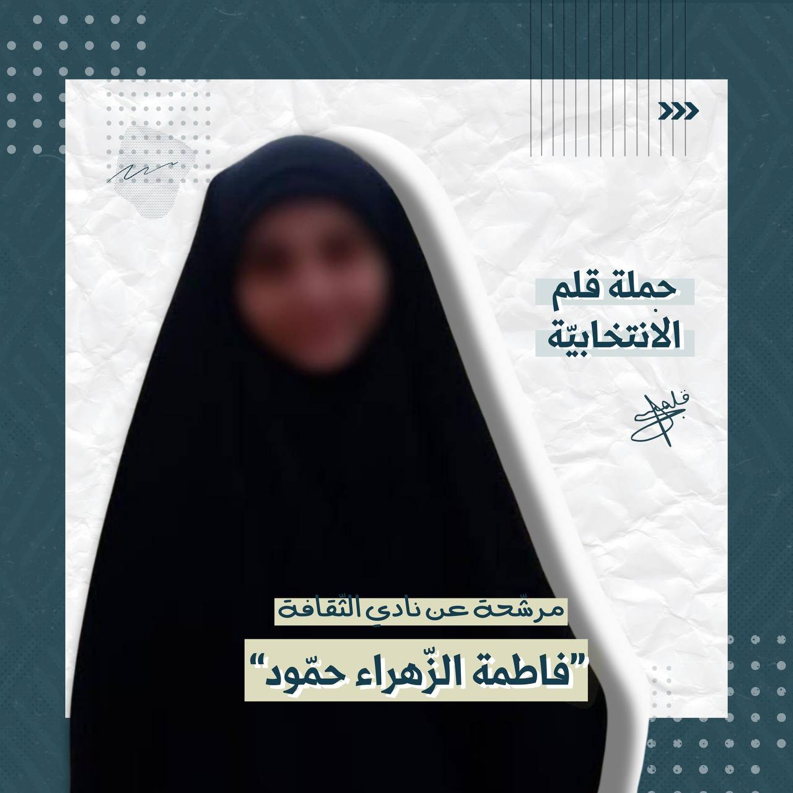
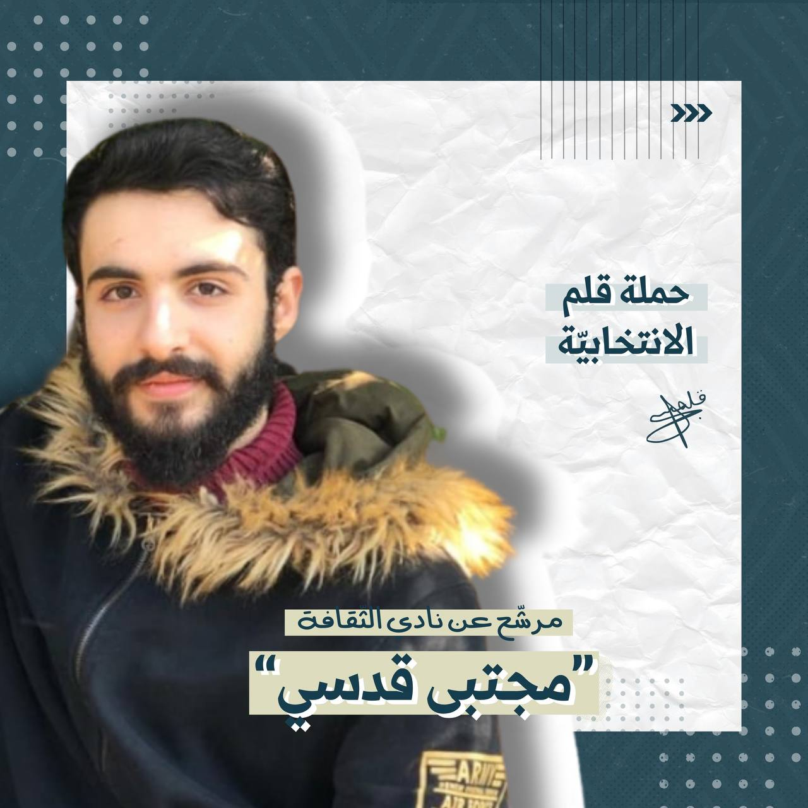
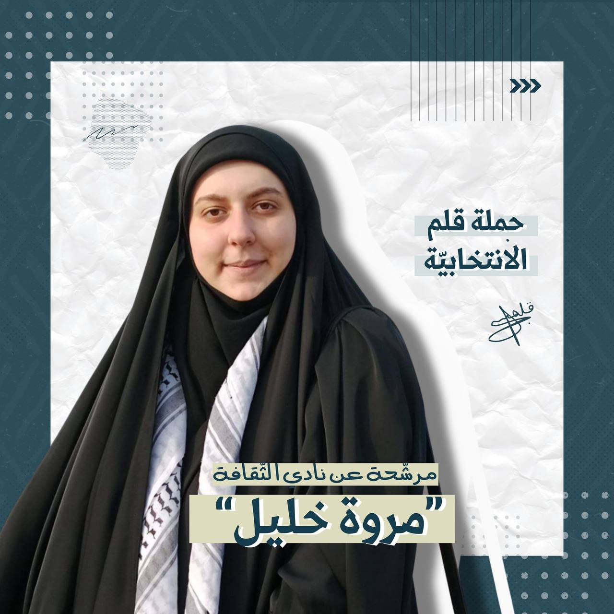
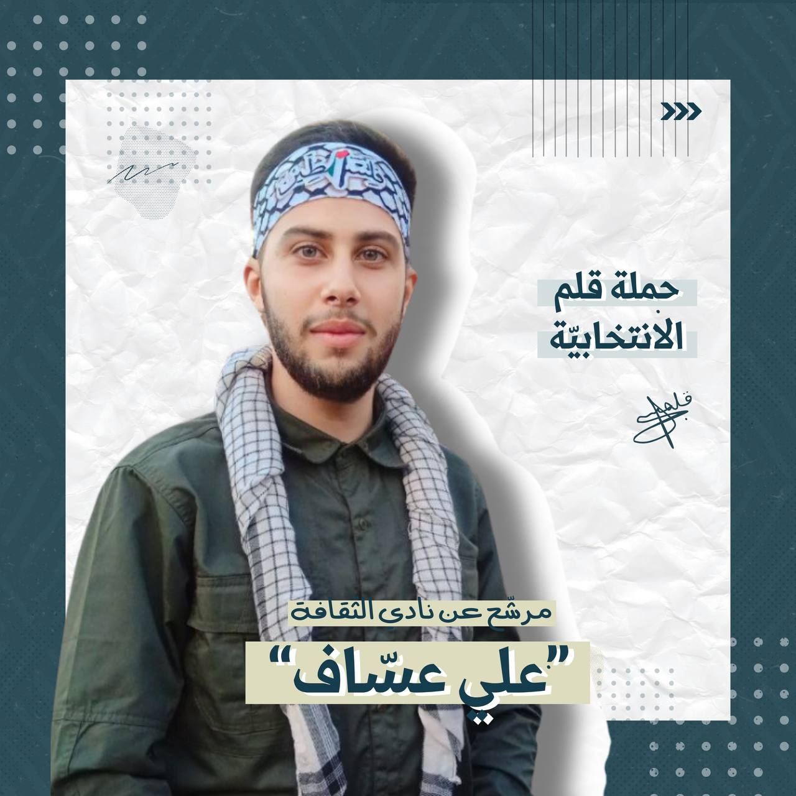
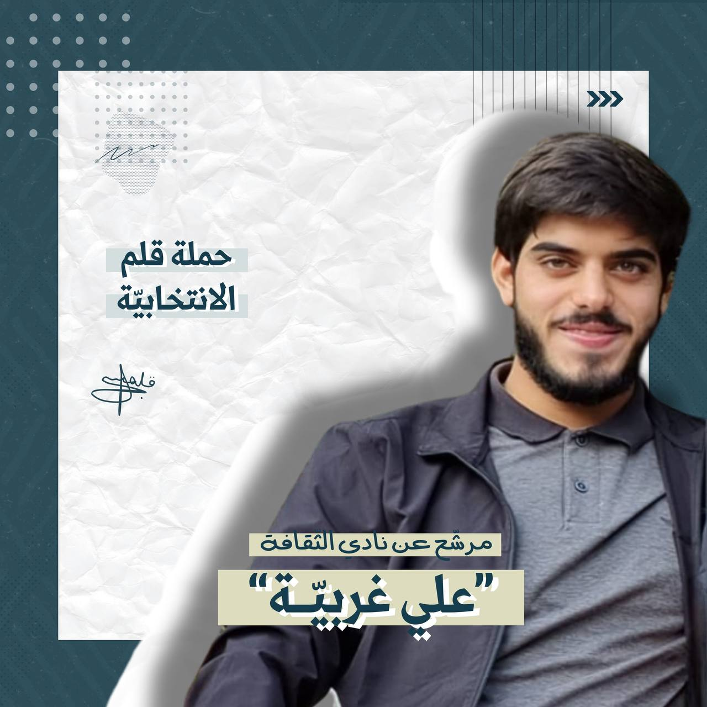

كلية العلوم
السنة الثانية
الصفات: علاقات اجتماعية واسعة، ناشطة اعلاميًّا، موهبة في التعريف
والكتابة
الدورات:
1. دورات قرآنية (نغم و تجويد)
2. دورة كادر قرآني
3. مرحلة عامة في معهد سيدة نساء العالمين (معارف 1 2 3 4)
4. مشاركة في مسابقات دينية/قرآنية/بيئية
مندوبة تعبئة لمدرسة المهدي شاهد سابقًا
قائدة كشفية
مسؤولة طوبى في الهيئات
إعطاء دورات ثقافية قرآنية

كلية علوم
سنة ثانية
دورات:
مكمل - دورة قائد كشفي - دورة إسعاف - دورات رياضية
قائد كشفي(قائد ٣ فرق - أمين سر)
ورش: ثقافية - كشفية - إدارية - سياسية
المشاركة في العديد من المسابقات العلمية و الدينية
التمرن العملي في الاختصاص

كلية علوم
سنة ثالثة
دورات ثقافية (معارف ٣,٢,١)/قرآنية
مندوبة أنشطة ٢٠١٩-٢٠٢١
متطوعة في مبادرة كوني حرّة ٢٠١٩-٢٠٢٢
متطوعة في مركز المطالعة والتنشيط الثقافي ٢٠١٩-٢٠٢٠
طالبة في معهد سيدة نساء العالمين ٢٠١٧-٢٠١٩
قائدة كشفية
مشاركة وفائزة في العديد من المسابقات (بيئية/علمية/دينية/أدبية)
العمل ضمن برنامج work-study في مديرية شؤون الطلاب

هندسة كهرباء و إلكترونيك
سنة رابعة
أمانة المعلومات في قطاع بعلبك في كشافة الإمام المهدي (عج) و كذلك أمين
سر الفوج
عضو إدارة منتدى هداة الثّقافي
العمل مع هيئة اللجان في الشُّعَب
مندوب التعبئة التربوية في مدرسة المهدي بعلبك

كلية الهندسة
سنة رابعة
أبرز الصفات:
إجتماعي و سريع البديهة
بعض المؤهلات:
خاضع للعديد من الدورات الكشفية أبرزها:
دورة قائد
شارة موارد بشرية
دورة قائد شبابي
دورة رائد شبابي
شغلت منصب قائد جوالة في فوج "ابو الفضل العباس" في حي السراي في
النبطية
خاضع للعديد من الدورات الثقافية أبرزها:
جنود
أنصار
ممهدون
و مشارك في العديد من المعسكرات التدريبية الثقافية
و الكثير من الدورات و الورش المتعلّقة بالشّق الإعلامي من تصوير و إعداد
تقارير وصناعة الشعارات و ورش و دورات متعلقة بموضوع الخطاب و الحضور على
المسرح و لغة الجسد و ما إلى هنالك